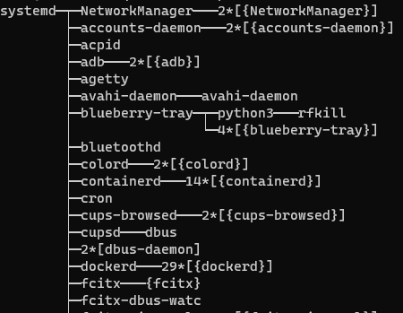

learn a cmd each day
每天熟悉一个命令
pstree

1 | pstree: unrecognized option '--help' |
pidof
root@m:/usr/src/linux-headers-5.4.0-26-generic/include# ps -a
PID TTY TIME CMD
2097 pts/0 00:00:00 sudo
2948 pts/1 00:00:00 bash
2969 pts/0 00:00:00 tmux: client
45805 pts/9 00:00:00 ps
root@m:/usr/src/linux-headers-5.4.0-26-generic/include# pidof tmux
2971 2969
chroot
命令用于改变根目录
xargs
xargs 是一个强有力的命令，它能够捕获一个命令的输出，然后传递给另外一个命令。
somecommand |xargs -item command
-a file 从文件中读入作为sdtin
-e flag ，注意有的时候可能会是-E，flag必须是一个以空格分隔的标志，当xargs分析到含有flag这个标志的时候就停止。
-p 当每次执行一个argument的时候询问一次用户。
-n num 后面加次数，表示命令在执行的时候一次用的argument的个数，默认是用所有的。
-t 表示先打印命令，然后再执行。
-i 或者是-I，这得看linux支持了，将xargs的每项名称，一般是一行一行赋值给 {}，可以用 {} 代替。
-r no-run-if-empty 当xargs的输入为空的时候则停止xargs，不用再去执行了。
-s num 命令行的最大字符数，指的是 xargs 后面那个命令的最大命令行字符数。
-L num 从标准输入一次读取 num 行送给 command 命令。
-l 同 -L。
-d delim 分隔符，默认的xargs分隔符是回车，argument的分隔符是空格，这里修改的是xargs的分隔符。
-x exit的意思，主要是配合-s使用。。
-P 修改最大的进程数，默认是1，为0时候为as many as it can ，这个例子我没有想到，应该平时都用不到的吧。
VIM r
:r
可以把其他文本文件内容插入到当前文件中
列出ubuntu上所有的服务
systemctl list-units –all –type=service
将当前文件中除了src目录全部移动到src目录
mv `ls | grep -v src | xargs` src
xargs 将ls 的结果作为一行
grep -v 反向
mv `(ls | grep -v 'example[12]' | xargs)` example1
将除了 example1和example2剩下的所有文件全部移动到example1中去
nohup
不挂断地运行命令
nohup cmd &
当前shell关闭后，会将该进程的父进程指向init（PID 1）
TC
show / manipulate traffic control settings
Usage: tc [ OPTIONS ] OBJECT { COMMAND | help }
tc [-force] -batch filename
where OBJECT := { qdisc | class | filter | chain |
action | monitor | exec }
OPTIONS := { -V[ersion] | -s[tatistics] | -d[etails] | -r[aw] |
-o[neline] | -j[son] | -p[retty] | -c[olor]
-b[atch] [filename] | -n[etns] name | -N[umeric] |
-nm | -nam[es] | { -cf | -conf } path }
详细参考 man tc
将 eth0 网卡的传输设置为延迟100毫秒发送。
$ tc qdisc add dev eth0 root netem delay 100ms
延迟值不会这么精确，会有一定的波动，下面命令模拟带有波动性的延迟值：
$ tc qdisc add dev eth0 root netem delay 100ms 10ms
root@m:/home/m/Smart210# tc qdisc
qdisc noqueue 0: dev lo root refcnt 2
qdisc fq_codel 0: dev eth0 root refcnt 2 limit 10240p flows 1024 quantum 1514 target 5.0ms interval 100.0ms memory_limit 32Mb ecn
qdisc netem 8001: dev wlan0 root refcnt 2 limit 1000 delay 100.0ms
qdisc noqueue 0: dev docker0 root refcnt 2
模拟网络丢包
将 eth0 网卡的传输设置为随机丢掉 1% 的数据包。
$ tc qdisc add dev eth0 root netem loss 1%
模拟数据包损坏\模拟数据包乱序\
设置延时
$ sudo tc qdisc add dev eth0 root netem delay 4s
取消延时
$ sudo tc qdisc del dev eth0 root netem delay 4s
配合iptables 使用
根据commit id生成patch
git format-patch -1 d9a64c74ff0244b96a44fa27abcdc411d29f487
vim 批量tab
shift+V 选中
shift+>
openwrt安装ipk
ssh连接路由命令安装
或者用ssh软件PuTTY连接路由器
opkg update
opkg install 软件包网址
或者用winscp连接路由 然后上传包到/tmp/下
opkg update
opkg install /tmp/xxx.ipk
du和df
q@q-K501LB:~/Khadas$ du -d 1 -h Android_P/
6.5G Android_P/external
350M Android_P/toolchain
1.6G Android_P/tools
22G Android_P/prebuilts
144G Android_P/.repo
84M Android_P/libcore
912K Android_P/pdk
329M Android_P/bootloader
31M Android_P/sdk
811M Android_P/common
3.3M Android_P/compatibility
5.8M Android_P/platform_testing
124M Android_P/test
14M Android_P/build
22M Android_P/bootable
34M Android_P/bionic
436M Android_P/developers
876K Android_P/kernel
1.7G Android_P/vendor
1.7G Android_P/frameworks
404K Android_P/libnativehelper
131M Android_P/development
167M Android_P/device
90M Android_P/art
553M Android_P/hardware
691M Android_P/packages
470M Android_P/system
779M Android_P/cts
80G Android_P/out
27M Android_P/dalvik
261G Android_P/
-h 结尾以B K M G为单位，方便阅读。df 命令也一样，也有-h选项
bash dash
for i in {1..7}
do
echo $i
done
用bash 执行可以，但是dash 不行
git 删除分支
现在在zh分支上，想删除zh分支
1 先切换到别的分支: git checkout master
2 删除本地分支： git branch -d zh
3 如果删除不了可以强制删除，git branch -D zh
4 有必要的情况下，删除远程分支(慎用)：git push origin --delete zh
git 如何merge 分支
xxx
expect 的用法
当出现 username 的时候，自动输入 QuectelWB.
自动ssh登录输入密码
Shell 脚本如下
#!/usr/bin/expect
spawn ssh m@10.66.125.234
expect "*password:"
send "m\r"
expect "*$"
interact
find 的用法
查找/etc下的链接属性的文件，大小小于1kb的
find /etc -type l -o -size -1k
chgrp
修改文件所属组群chgrp
修改文件所属组群很简单-chgrp命令，就是change group的缩写（我们可以利用这些来记忆命令）
语法：
chgrp 组群 文件名/目录
相比于chwon 更不常用
nslookup
android@q-OptiPlex-7070:~/IMX8_Android9$ nslookup www.baidu.com 8.8.8.8
Server: 8.8.8.8
Address: 8.8.8.8#53
Non-authoritative answer:
www.baidu.com canonical name = www.a.shifen.com.
Name: www.a.shifen.com
Address: 14.215.177.39
Name: www.a.shifen.com
Address: 14.215.177.38
:)